JavaScript
Intégration
Un script JavaScript peut être intégré de deux façons différentes :
- En écrivant le code directement dans la balise :
<script>/* Code JavaScript */</script>Code HTML
<!-- Exemple JavaScript --> <script>console.log("Hello JavaScript!");</script> - En tapant le code dans un fichier à part, puis l'intégrer à l'aide de la balise :
<script src="URL/fichier.js"></script>Code HTML
<script src="welcome.js"></script>Code JavaScript (dans le fichier welcome.js)
// Exemple JavaScript console.log("Hello JavaScript!");
Activité 1
- Créer un fichier HTML nommé javascript01.html contenant le code suivant :
<script>console.log("Hello JavaScript!");</script> - Ouvrir la page dans le navigateur. Puis ouvrir l'outil de développement (DevTools).
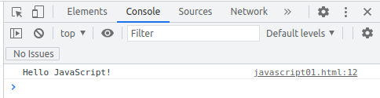
Résultat du code JavaScript
Activité 2
- Créer un fichier JavaScript nommé jscript01.js contenant le code suivant :
console.log("Hello from console.log inside an external file"); - Intégrer ce code dans le fichier javascript01.html à l'aide de la balise :
<script src="jscript01.js"></script> - Recharger la page dans le navigateur, appuyer F5.
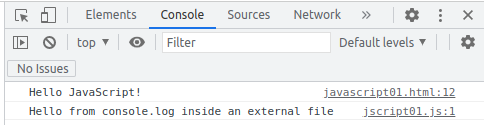
Résultat du code JavaScript dans un fichier externe
Affichage
JavaScript permet d'afficher les résultats des traitements de plusieurs façons :
- Dans la console de l'outil de développement (Devtools),
- Dans une boîte d'alerte,
- Dans le document HTML,
- Dans le DOM,
- Dans un composant d'un formulaire,
Affichage : console.log
L'affichage dans la console sert à débugger les scripts JavaScript. Il sert principalement à traquer les éventuelles erreurs dans un script.
Exemple
<script>
// Calcul de l'hypoténus d'un triangle rectangle
let a = 3;
let b = 4;
// L'hypoténus est calculé en utilisant la formule :
// c = racine(a^2+b^2)
let c = Math.sqrt(a + a);
// c doit être égal à 5
console.log("a = ", a, " - b = ", b, " - c = ", c);
</script>Résultat
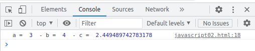
Travail demandé
- Créer un fichier HTML nommé javascript02.html.
- Copier le code précédent puis le tester dans la console du navigateur.
- Corriger l'erreur.
Affichage : boîte d'alerte (alert)
La boîte d'alerte alert surgit afin d'attirer l'attention de l'utilisateur et de l'alerter sur une exception dans le script.
Exemple
On suppose qu'un utilisateur a tapé deux mots de passes différents dans les champs suivants :
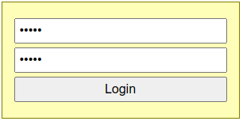
La page doit alerter l'utilisateur de l'erreur.
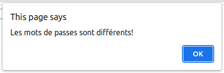
Le message précédent est obtenu en utilisant la fonction alert("Message").
alert("Les mots de passes sont différents!");Travail demandé
Copier le code JavaScript précédent dans la console puis appuyer sur la touche Enter.
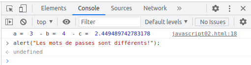
Affichage : Document HTML (document.writeln)
Il est possible d'afficher le résultat d'un traitement directement dans la page en utilisant la fonction
document.writeln("message");. Cette fonction permet aussi d'insérer un code HTML dans la page et
de
l'exécuter.
Exemple
<script>
let a = 5;
let b = 6;
document.writeln("<p>", a, "+", b, "=", a + b, "</p>");
document.writeln("<p>", a, "*", b, "=", a * b, "</p>");
document.writeln("<p>", a, "-", b, "=", a - b, "</p>");
document.writeln("<p>", a, "/", b, "=", a / b, "</p>");
</script>p:nth-child(odd) { color: red; }
p:nth-child(even) { color: blue; }Résultat
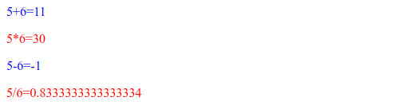
Travail demandé
- Créer un fichier HTML nommé javascript04.html.
- Copier le code HTML et le code CSS ci-dessus.
- Tester dans le navigateur.
Affichage : DOM (Document Object Model)
Une page web possède une structure formée par ses éléments appelée DOM. Le langage JavaScript offre plusieurs fonctions pour accéder au DOM, notamment :
document.getElementById("id"): retrourne une référence à un élément de la page connaissant sonid.document.querySelector("css_selector"): retourne une référence au premier élément de la page en fonction du sélecteur CSS donné.
L'obtention d'une référence à un élément a pour objectif de manipuler ses propriétés à l'aide de JavaScript.
- On peut, par exemple, récupérer la référence d'un champ dans un formulaire à l'aide de son #elem_id
const elem = document.getElementById("elem_id"). Puis, on peut soit modifier sa valeur en utilisant :elem.value = "Une nouvelle valeur";. - On peut, même, changer le contenu d'un élément en utilisant la propriété :
elem.innerHTML = "<p>Code HTML</p>";.
Exemple 1 : Accès aux propriétés d'un formulaire
<form action="#">
<div>
<label for="np">Nom & Prénom</label>
<input type="text" name="np" id="np" value="Yassine">
</div>
<div>
<label for="dn">Date de naissance</label>
<input type="date" name="dn" id="dn" value="2022-10-08">
</div>
<button type="submit">Confirmer</button>
</form>
<script>
const np = document.getElementById("np");
const dn = document.getElementById("dn");
document.writeln("<p>Bonjour ", np.value, "</p>");
document.writeln("<p>Vous êtes né le ", dn.value, "</p>");
</script>* { box-sizing: border-box; }
form {
width: 300px;
background-color: #fffeb8;
margin: 50px auto;
border: #807d00 1px solid;
padding: 15px;
}
input[type="text"],
input[type="date"],
button {
display: block;
width: 100%;
margin: 5px 0;
padding: 5px;
font-size: 12pt;
}Résultat
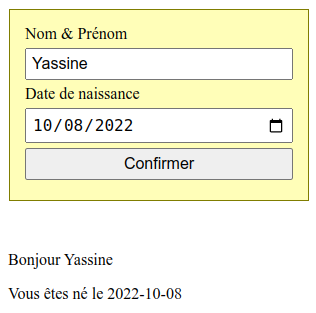
Travail demandé
- Créer un fichier HTML nommé javascript05.html.
- Copier le code HTML et CSS précédents.
- Tester dans le navigateur.
- Ajouter un champ intervalle type="range" avec lequel l'utilisateur peut sélectionner le nombre d'articles à acheter de 1 à 7. La valeur par défaut du champ est 3.
- Ajouter un code JavaScript qui affiche la valeur de ce dernier champ.
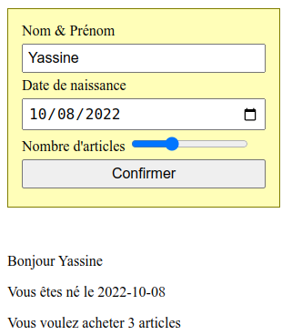
Résultat à obtenir
Exemple 2 : Modification du contenu d'un élément
<div id="message"></div>
<script>
// récéupérer une référence du div
const msg = document.getElementById("message");
// ajouter un contenu à ce div
msg.innerHTML = '<p class="erreur">Bienvenue dans JavaScript!</p>';
</script>#message {
width: 500px;
margin: 10px auto; }
.erreur {
background-color: red;
color: white;
font-weight: bold;
padding: 15px; }Résultat
Travail demandé
- Copier les codes HTML et CSS de l'exemple précédent dans un fichier HTML nommé : javascript07.html
- Tester dans un navigateur.
- Ajouter la balise suivante dans la partie HTML du document :
<div id="greeting"></div> - Ajouter le code JavaScript nécessaire pour obtenir l'affichage suivant :
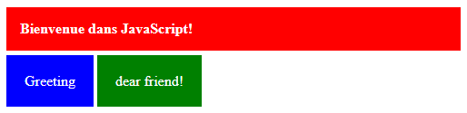
Résultat à obtenir
Affichage : Formulaire
Un formulaire permet de recuillir les information de l'utilisateur, pour les soumettre à un serveur ou pour les manipuler localement à l'aide de JavaScript.
En récupérant la référence d'un composant du formulaire à l'aide de
const elem = document.getElementById("elemid"), il est possible de modifier sa valeur via
l'instruction : elem.value = "Nouvelle valeur";
Exemple
<form action="#">
<div><label for="a">a</label>
<input type="number" name="a" id="a" value="9"></div>
<div><label for="b">b</label>
<input type="number" name="b" id="b" value="8"></div>
<div><label for="op">Opération</label>
<select id="op" name="op">
<option value="+">+</option><option value="-">-</option>
<option value="*">*</option><option value="/">/</option>
</select></div>
<div><label for="res">Résultat</label>
<input type="number" name="res" id="res" readonly></div>
<button type="submit">Calculer</button>
</form>
<script>
const a = document.getElementById("a");
const b = document.getElementById("b");
const op = document.getElementById("op");
const res = document.getElementById("res");
res.value = eval(a.value + op.value + b.value);
</script>* {
box-sizing: border-box;
}
form {
width: 300px;
background-color: #fffeb8;
margin: 50px auto;
border: #807d00 1px solid;
padding: 15px;
}
input[type="number"],
select,
button {
display: block;
width: 100%;
margin: 5px 0;
padding: 5px;
font-size: 12pt;
}Résultat
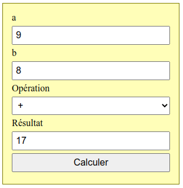
Travail demandé
- Créer un fichier HTML nommé javascript06.html.
- Copier le code HTML et CSS ci-dessus.
- Tester dans le navigateur.
- Ajouter un troisième champ nombre nommé c.
- Modifier le code précédent pour qu'il calcule : a + b + c, a - b - c, a * b * c ou a / b / c.
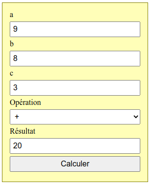
Résultat à obtenir
Variables / Constantes
On peut déclarer des variables en JavaScript en utilisant les mots clés var et let.
Les variables peuvent être initialisées lors de leurs déclaration. Une variable non initialisée contient la
valeur : undefined.
Le nom d'une variable doit commencer par une lettre ou par le caractère de soulignement (_). Les caractères suivants peuvent être des lettres, des chiffres et/ou le caractère de soulignement.
Contrairement à une variable dont la valeur peut changer au cours de l'exécution du script, la valeur d'une constante reste inchangée après sa déclaration.
Remarque 1 : Il est vivement conseillé d'utiliser le mot clé
let. Le mot clé var est à éviter.
Remarque 2 : JavaScript est sensible à la casse.
Exemple 1 : Déclaration d'une variable
// Déclaration de variables sans initialisation
var x;
let y;
// Déclaration de variables avec initialisation
var nom = "Ahmed";
let age = 16;
console.log(x, y);
console.log(nom, age);Résultat
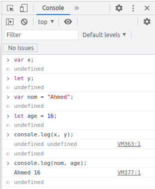
Exemple 2 : Sensibilité à la casse
let x = 6;
console.log(X); // Affiche une erreur : X is not defined
console.log(x);Résultat
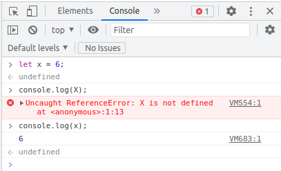
Exemple 3 : Constantes vs Variables
// variable
let x = 4;
x = x + 2;
x = x * 5;
console.log(x);
// constante
const y = 5;
y = y + 2;
console.log(y);Résultat
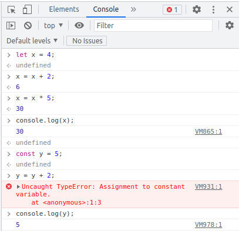
Travail demandé
Utiliser la console pour tester les trois exemples précédents.
Types prédéfinis
JavaScript supporte six classes de variables prédéfinis :
number: Pour les nombres entiers et réels,string: Pour les chaînes de caractères,boolean: Pour les expressions qui renvoienttrueoufalse,object: Pour les tableaux et les objets définis par l'utilisateur,function: Pour les fonctions,undefined: Pour les variables déclarées sans initialisation.
Le mot clé typeof v retourne le type de v. v est soit une constante ou une variable.
Exemple
console.log(typeof 5.6); // 'number'
console.log(typeof 17);
console.log(typeof Number.NaN);
console.log(typeof "ayoub"); // 'string'
console.log(typeof (5 > 6)); // 'boolean'
console.log(typeof [1, 2, 3]); // 'object'
console.log(typeof null);
let x;
console.log(typeof x); // 'undefined'
console.log(typeof Math.abs); // 'function'Résultat
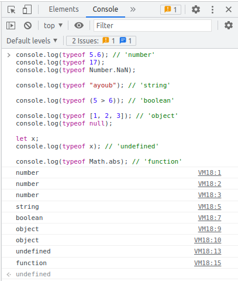
Travail demandé
Tester les commandes précédentes dans la console du navigateur.
Les opérateurs
Les opérateurs sont classés en catégories :
Les opérateurs de calcul
| Addition | Soustration | Multiplication | Division | Modulo |
|---|---|---|---|---|
| c = a + b; | d = a - b; | e = a * b; | f = a / b; | g = a % b; |
Exemple 1
let a = 15;
let b = 6;
let c = a + b; console.log(c); // 21
let d = a - b; console.log(d); // 9
let e = a * b; console.log(e); // 90
let f = a / b; console.log(f); // 2.5
let g = a % b; console.log(g); // 3Les opérateurs assosiatifs
Il s'agit d'une forme plus courte des opérateurs arithmétiques.
| Addition | Soustration | Multiplication | Division | Modulo |
|---|---|---|---|---|
| a += b; Equivalente à : a = a + b; |
a -= b; Equivalente à : a = a - b; |
a *= b; Equivalente à : a = a * b; |
a /= b; Equivalente à : a = a / b; |
a %= b; Equivalente à : a = a % b; |
Exemple 2
let a = 15;
let b = 6;
a += b; console.log(a); // 15 + 6 = 21
a -= b; console.log(a); // 21 - 6 = 15
a *= b; console.log(a); // 15 * 6 = 90
a /= b; console.log(a); // 80 / 6 = 15
a %= b; console.log(a); // 15 % 6 = 3Les opérateurs d'incrémention
Il s'agit d'une forme plus courte des opérateurs arithmétiques.
| Pré-incrémentation | Post-incrémentation | Pré-décrémentation | Post-décrémentation |
|---|---|---|---|
| ++a; Equivalente à : a = a + 1; |
a++; Equivalente à : a = a + 1; |
--a; Equivalente à : a = a - 1; |
a--; Equivalente à : a = a - 1; |
Exemple 3
let a = 8;
// Pré-incrémentation
console.log(++a); // 9
console.log(a); // 9
// Post-incrémentation
console.log(a++); // 9
console.log(a); // 10
// Pré-décrémentation
console.log(--a); // 9
console.log(a); // 9
// Post-décrémentation
console.log(a--); // 9
console.log(a); // 8Les opérateurs de comparaison
| Supérieur | Supérieur ou égal | Inférieur | Inférieur ou égal | Même valeur | Valeur différente | Même type et même valeur | Type ou valeur différents |
|---|---|---|---|---|---|---|---|
| a > b | a >= b | a < b | a < b | a == b | a != b | a === b | a !== b |
Exemple 4
let a = 8;
let b = "8";
let c = 9;
// Supérieur
console.log(c, ">", a, "=>", c > a); // true
console.log(b, ">", a, "=>", b > a); // false
// Supérieur ou égal
console.log(c, ">=", a, "=>", c >= a); // true
console.log(a, ">=", b, "=>", a >= b); // true
// Inférieur
console.log(c, "<", a, "=>", c < a); // false
console.log(b, "<", a, "=>", b < a); // false
// Inférieur ou égal
console.log(c, "<=", a, "=>", c <= a); // false
console.log(a, "<=", b, "=>", a <= b); // true
// Même valeur
console.log(c, "==", a, "=>", c == a); // false
console.log(b, "==", a, "=>", b == a); // true
// Valeur différente
console.log(c, "!=", a, "=>", c != a); // true
console.log(b, "!=", a, "=>", b != a); // false
// Même type et même valeur
console.log(c, "===", a, "=>", c === a); // false
console.log(b, "===", a, "=>", b === a); // false
// Type ou valeur différents
console.log(c, "!==", a, "=>", c !== a); // true
console.log(b, "!==", a, "=>", b !== a); // trueLes opérateurs logiques
| Et logique | Ou logique | Non logique |
|---|---|---|
| a && b | a || b | !a |
Exemple 5
let a = 8;
let b = 6;
let c = 4;
console.log(a, ">", b, "&&", b, ">", c, (a > b && b > c)) // true
console.log(a, "<", b, "||", b, ">", c, (a < b || b > c)) // true
console.log("!(", a, ">", b, ")", !(a > b)) // falseLes entrées
Il est possible de récupérer les données de l'utilisateur en utilisant diverses méthodes :
- Depuis un formulaire en utilisant la propriété :
elem.valued'un champ. - Depuis une boîte d'invite (prompt).
- Depuis une boîte de confirmation.
Exemple 1 : récupérer une donnée depuis un champ d'un formulaire
<input type="text" id="np" name="np" value="Salah">
<script>
const np = document.getElementById("np");
document.writeln("Bonjour ", np.value);
</script>Résultat
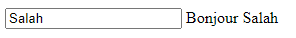
Exemple 2 : récupérer une donnée à partir d'une boîte d'invite
<div id="operation"></div>
<script>
const op = document.getElementById("operation");
let a = prompt("Donner a ?", "5");
let b = prompt("Donner b ?", "7");
let s = a + b;
op.textContent = a + " + " + b + " = " + s;
</script>Résultat
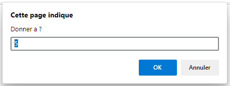
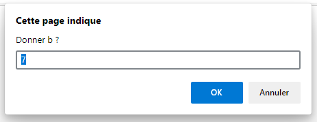
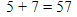
Exemple 3 : récupérer une confirmation
<script>
const reponse = confirm("Voulez-vous supprimer cet élément ? ");
if (reponse) {
alert("L'élément a été supprimé !");
} else {
alert("Vous avez annulé l'opération !");
}
</script>Résultat
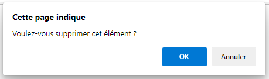